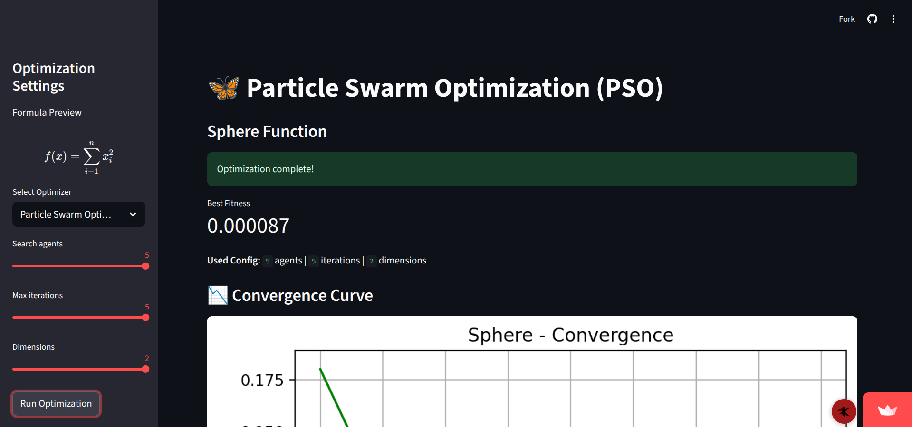
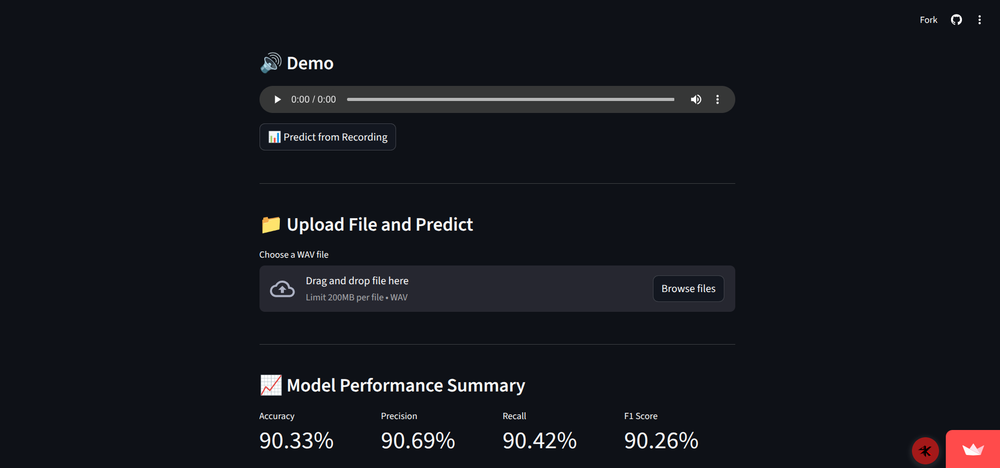
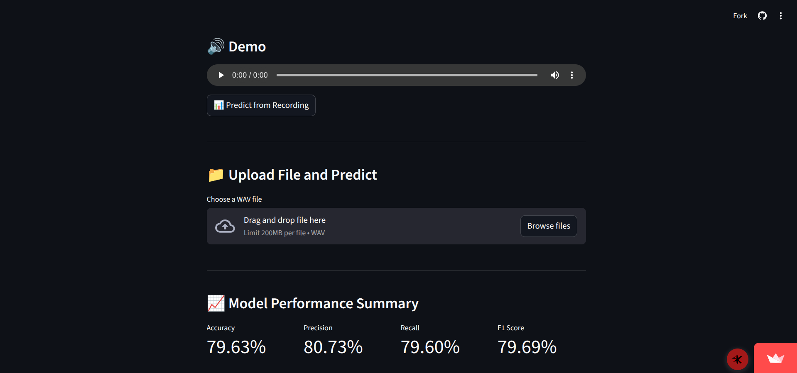

Welcome aboard stranger❗
My name is Danishwara, but you can call me Dash.
I'm currently studying Computer Science at Udayana University in Bali, Indonesia. I like programming in general, but for some time now I've started doing web programming, both front-end and back-end development. I also have a strong interest in game development, even though I'm nowhere near mastering it.
Outside the coding stuff, I also have an interest in cybersecurity and network engineering. Also, I like to do photography once in a while—I even created an Instagram page dedicated to showcasing my favorite shots (lol). If you have similar interests as me, feel free to hit me up!
Danishwara Pracheta
Part-time Comedian | Full-time Clown



PSO & GWO Optimizer
Particle Swarm Optimizer (PSO) and Grey Wolf Optimizer (GWO) for sphere function using python

SVM Spoken Digit Detection
Free Spoken Digit Detection using SVM and MFCC + Frequency/Time Domain Features

CNN Spoken Digit Detection
Spoken Digit Detection using a Convolutional Neural Network and MFCC